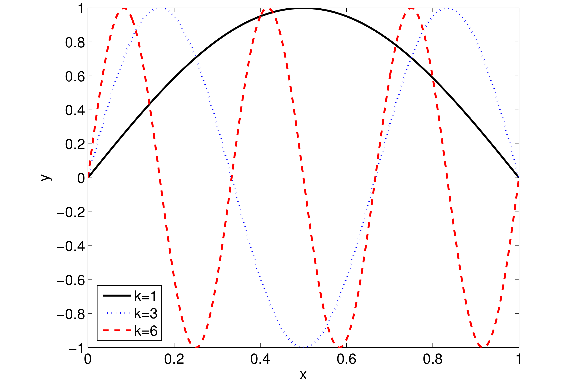
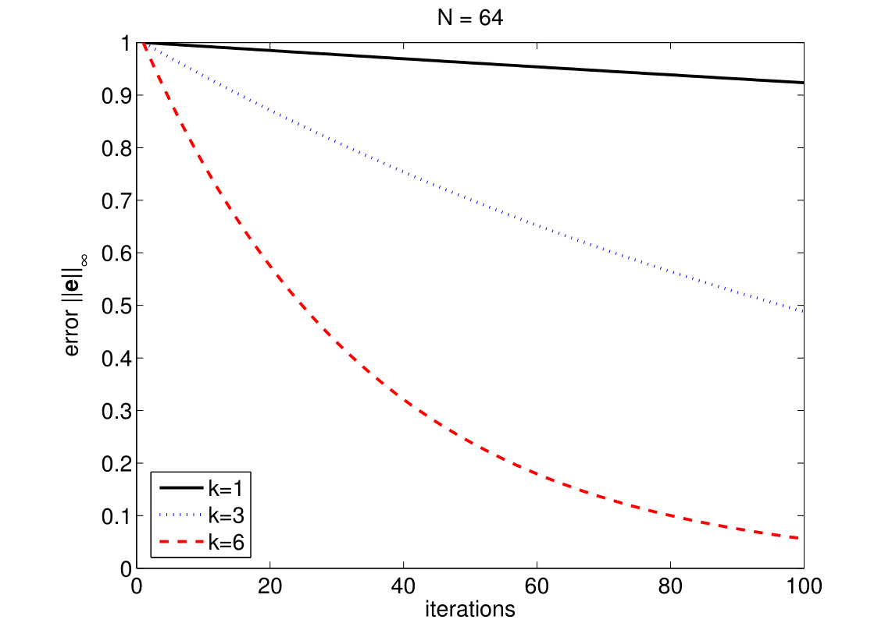
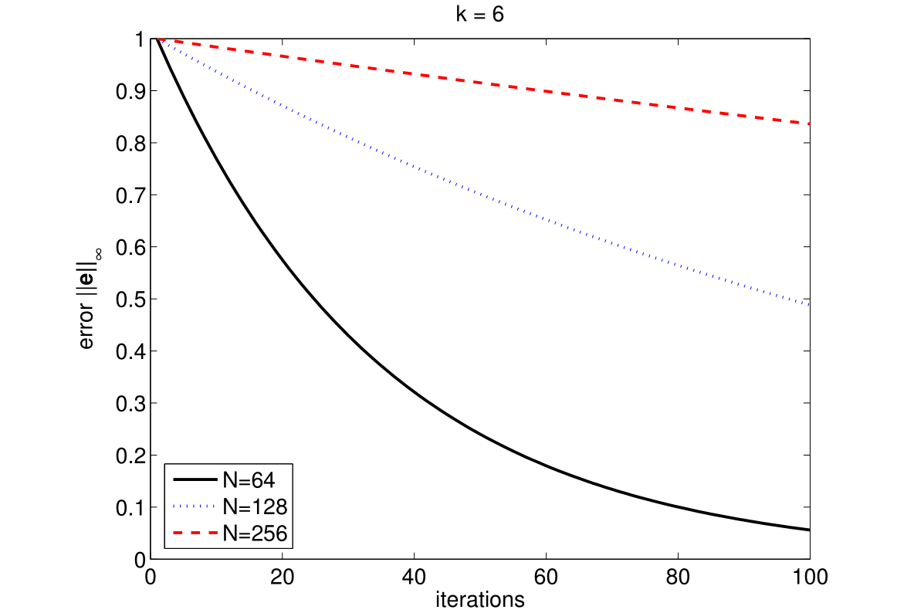
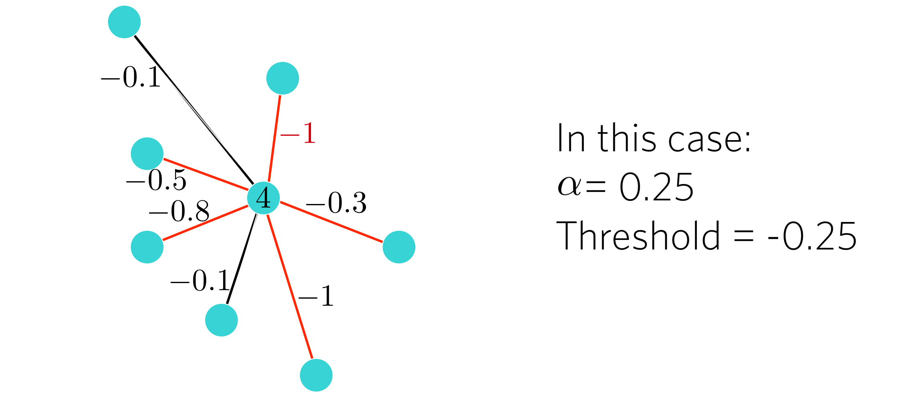
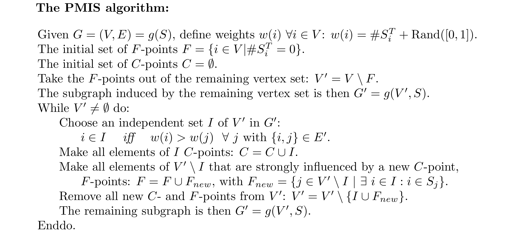
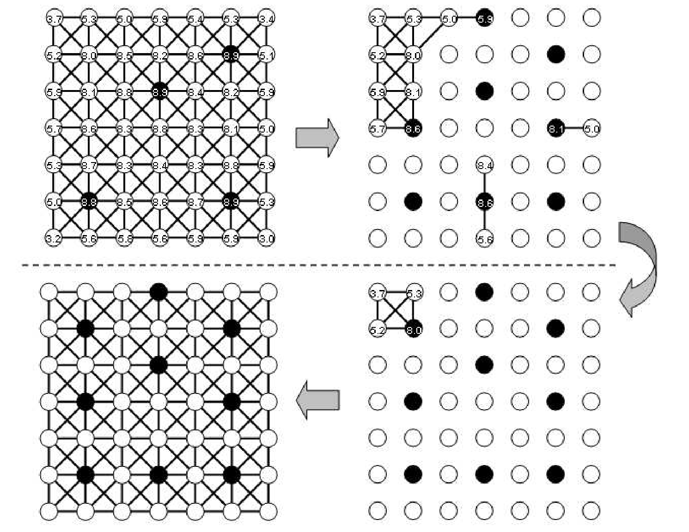
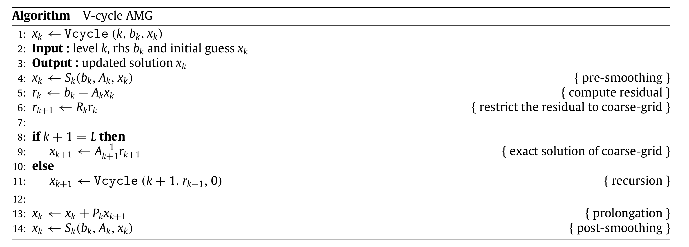

§动机
考虑正弦函数组： $$ f_k(x)=\sin(k \pi x) $$ 它的频率是$k/2$，k越小则频率越低，函数的周期越长，图像越平缓。如下图所示：

考虑一个齐次线性方程组 $$ Au=0 $$
其中$A \in R^{N \times N}$，由有限单元法产生。令迭代初始值为 $$ u^{(0)}=\left( u_0^{(0)}, u_1^{(0)}, \dots, u_{N-1}^{(0)} \right) $$ 其中 $$ u_j^{(0)}=\sin\left( \frac{jk\pi}{N} \right), \quad k=1,2,\dots $$ 使用以下的迭代方法(Damped Jacobi Iterative Method) $$ u^{(m+1)}=u^{(m)}+\frac{2}{3}D^{-1}r^{(m)} $$ 令误差为 $$ e^{(m)}=u-u^{(m)}=-u^{(m)} $$ 则迭代过程中的误差的无穷范数的下降曲线的形状如下面几张图所示。


从图中可以看出：k越大即误差的频率越高的时候，误差下降越快；k一定时，方程的规模越小则误差下降越快。更具体的分析请参考[1]。
在实际求解问题时很难预先对近似解的误差作估计，但可以通过多重网格降低方程的规模。
§代数多重网格
一个代数多重网格算法需要考虑这5部分的内容：1、连接关系：估计节点之间的影响强弱以确定它们的连接关系；2、粗网格点选择；3、插值和限制：对当前网格上的残差进行限制得到粗网格上的残差，和对粗网格上的误差进行插值得到细网格上的误差；4、计算粗网格上的系数矩阵；5、求解循环。
§强连接关系
节点i强依赖于j，或者说j强影响i，当且仅当： $$ -a_{ij} \ge \alpha \max_{k \ne i} (-a_{ik}) $$ 其中$\alpha \in (0,1)$；一般而言，$\alpha$取0.25~0.5，参考文献[3]；而文献[2]提到，2D问题取0.25，3D问题取0.5。对于强连接关系的判定，不同的文献在细节上有所不同，如文献[2]的判定方法是： $$ i=j \quad \text{or} \quad -s_i a_{ij}>\alpha\max_{-s_i a_{ij} > 0} (-s_i a_{ij}) $$ 其中
本节选择前一种判定方法，例下图中的红色边为强连接的边。

由于缺失几何信息，在对系数矩阵所代表的网格信息进行处理时，一般只考虑强连接关系，不考虑非强连接关系，并且，强连接关系存在方向，由强连接关系形成的图是有向图。
§粗网格点选择
粗网格点的质量直接影响到算法的收敛性。目前流行的算法有：RS[3]、CLJP[4]、Falgout[5]、PMIS[6]、HMIS[6]等。RS(Ruge–Stüben)算法是一个串行的算法，CLJP(Cleary–Luby–Jones–Plassman)和Falgout是它的并行变体。PMIS是并行独立集算法(Parallel Modified Independent Set)，效率较高，但选出的粗网格点质量稍差。HMIS(Hybrid Modified Independent Set)组合了CLJP的第一阶段和PMIS算法，是一种折衷方案。本节讲述PMIS算法。
定义强连接矩阵S为：
我们需要考虑的点集为$v={0,1,2,\dots,N-1}$。令 $$ S_i=\{j \in v | S_{ij}=1 \}, \quad S_i^T=\{j \in v | S_{ji}=1\}. $$ 则$S_i$是影响i的集合，$S_i^T$是i影响的集合。由于只考虑强连接，因此，对应的图为 $$ G=(v,E), \quad E=\{ (i,j) \in v \times v | S_{ij}=1\ \text{or}\ S_{ji}=1 \}. $$ G是一个无向图，无论是i影响j或者j影响i，它们之间都存在一条边。PMIS算法在图G中选择最大独立集。
独立集的定义为：$I \subset v$是独立集，当且仅当$\forall i,j \in I: (i,j) \notin E$。
最大独立集的定义为：$I \subset v$是最大独立集，当且仅当I是独立集且$\forall j \in V-I, I \cup \{j\}$不是独立集。
PMIS算法可以描述为：

其想法在于计算每个节点影响了多少个其它节点，每次选择影响的节点个数比邻居都多的节点加入独立集，然后将独立集中的节点都标记为粗网格节点，其邻居都标记为细网格节点，然后删除它们再考虑剩余的节点。
这里面有一个问题，如果某个节点和它的某个邻居影响的节点数量是相同的，就会被同时选作粗网格节点，然后把对方标记为细网格节点。解决办法是为每个节点的权重加上一个0到1之间的随机值，这样比较大小的时候仍然比较的是影响的节点数量，但如果两个节点互为邻居且影响的节点的数量相同，则此随机值可大概率保证只选出一个节点。
例：

实现：(不用深究，太复杂了，此处代码并不全，关注如何利用弱一致性实现无争用的算法，以及如何调用curand生成随机数)
|
|
其中关键的选择最大独立集的算法实现为：
|
|
§插值/限制
限制(Restriction)矩阵用于将残差传递到下层网格，插值(Interpolation)矩阵用于将误差插值到本层网格，它们互为转置关系。一般而言，从插值矩阵来考虑怎样选择这两个矩阵。
选择插值矩阵的原则是平滑误差($Ae \approx 0$)，推导过程可以参考文献[5]。插值的表达式为： $$ e_i=\sum_{j \in C_i}w_{ij}e_j $$ 其中i为细网格节点，$C_i \subset C$为用于向i插值的粗网格节点，一般选择为G中与i相邻的粗网格节点，权重的计算表达式为： $$ w_{ij}=-\cfrac{1}{a_{ii} + \sum\limits_{k\in D_i^w}a_{ik}}\left( a_{ij} + \sum_{k \in D_i^s} \cfrac{a_{ik}a_{kj}}{\sum\limits_{m \in C_i} a_{km}} \right) $$ 其中$D_i^s$是影响i但不在粗网格中的点集，$D_i^w$是与i有连接但不影响i的点集。那么$\sum\limits_{m \in C_i} a_{km}$选出的m是i和k的共同邻居且在粗网格中。注意此处的连接或邻居指的都是原始矩阵中的连接关系，不考虑强连接(仅$a_{im},a_{km} \ne 0$)。
这个插值表达式有一个问题，PMIS算法选出的网格点无法保证括号内的分式中的每个k，其分母上的和式都不为0，因此可能发生除0的错误。解决办法是使用文献[5]提出的一种插值方法： $$ w_{ij}=-\cfrac{1}{a_{ii} + \sum\limits_{k\in D_i^w \cup F_i}a_{ik}}\left( a_{ij} + \sum_{k \in D_i^s-F_i} \cfrac{a_{ik} \hat{a}{kj}}{\sum\limits{m \in C_i} \hat{a}_{km}} \right) $$ 其中
理论分析到此为此，在实现上，首先面临的第一个问题是到底应该如何生成插值矩阵P。假定原始网格节点数量为N，粗网格节点数量为M，那么矩阵P的维度应当为$N \times M$，对误差插值的表达式应当为$e_N=Pe_M$，其中$e_M$仅有M个分量，不可能符合前述插值过程的下标要求。实际上，前述过程中的下标都是原始网格中的下标。因此选出粗网格后的第一步应当是对粗网格节点进行编号，编号应当为：0, 1, 2, ..., M-1。然后计算出$w_{ij}$后，将列号j映射到粗网格中的编号，以此来决定它在插值矩阵P中的位置。
实际计算时，和计算转置等方法一样，先确定每行非零元素个数，生成row_offsets，然后分配空间，再逐个计算填入。具体代码太长、太复杂，这里不再给出，可以参考文件kernels.cu中的函数CalInterpolatorKernel和SingleDeviceAMG.cu中的函数Interpolator。
最后限制矩阵R可由P转置得到：$R=P^T \in \mathbb{R}^{M \times N}$，计算粗网格的残差向量：$r_M=Rr_N$。
§粗网格系数矩阵
若当前网格上的方程为 $$ A_Nx_N=b_N $$ 残差为$r_N$，则粗网格的残差为：$r_M=R^{M \times N} r_N$，方程为 $$ A_M e_M = r_M = R^{M \times N} r_N $$ 解得的误差$e_M$回传的表达式为 $$ e_N=P^{N \times M}e_M $$ 由于当前网格的方程等价于$A_N e_N=r_N$，因此 $$ A_N P^{N \times M} e_M=r_N $$ 两边左乘$R^{M \times N}$可得 $$ R^{M \times N} A_N P^{N \times M} e_M = R^{M \times N} r_N = r_M $$ 因此粗网格的系数矩阵为 $$ A_M = R^{M \times N} A_N P^{N \times M} $$ 这里需要做两次矩阵乘法。稀疏矩阵乘法的实现比较复杂，这里使用cusparse库来完成。
|
|
版本兼容性的问题可以通过CUDART_VERSION宏来解决。
问题：CUDA11已将上述代码中的cusparseDcsrgemm2等函数标记为deprecated，并将于CUDA12移除，改用cusparseSpGEMM，请考虑如何为cuda11及未来更高版本提供兼容的CsrMatrixMultiply。
§求解循环
常见的求解循环有v-cycle、w-cycle和f-cycle，其中v-cycle使用最多，其算法为：

其中涉及到光滑器($S_k$)，常见的光滑器有DILU、DIC、Gauss Seidel、Symmetric Gauss Seidel等。以DILU为例，和预处理方法类似，构造矩阵 $$ M=(E+L)E^{-1}(E+U) $$ 对传入的近似解$x_k$，先计算$r_k=b-Ax_k$，然后按DILU预处理方法中的算法计算$M^{-1}r_k$，最后计算$x_{k+1}=x_k+M^{-1}r_k$，这样就完成了一次光滑。其它算法类似，这里面没有太多新内容，不再赘述。
§参考文献
[1] Volker John. Multigrid Methods. 2013/14.
[2] Rajesh Gandham a,∗, Kenneth Esler b, Yongpeng Zhang b. A GPU accelerated aggregation algebraic multigrid method. Computers and Mathematics with Applications. 2014.
[3] J. W. Ruge and K. Stuben, Algebraic multigrid (AMG), in : S. F. McCormick, ed., Multigrid Methods, vol. 3 of Frontiers in Applied Mathematics (SIAM, Philadelphia, 1987) 73–130.
[4] A. J. Cleary, R. D. Falgout, V. E. Henson, and J. E. Jones, Coarse grid selection for parallel algebraic multigrid, in Proceedings of the fifth international symposium on solving irregularly structured problems in parallel (Springer-Verlag, New York, 1998).
[5] V. E. Henson and U. M. Yang, BoomerAMG: a parallel algebraic multigrid solver and preconditioner, Applied Numerical Mathematics 41 (2002) 155–177.
[6] H. De Sterck, U.M. Yang, J. Heys, Reducing complexity in parallel algebraic multigrid preconditioners, LLNL technical report UCRL-JRNL-206780, 2004.
[7] K. Stüben. An introduction to algebraic multigrid, Multigrid (2001) 413–532.